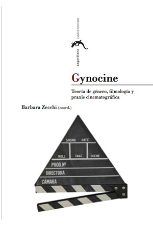
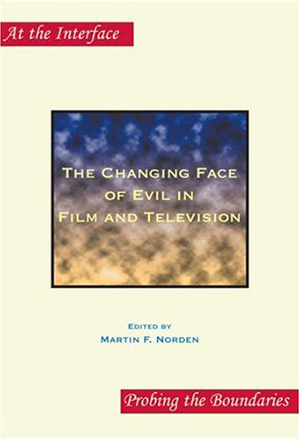

PUBLICATIONS AND PROJECTS

BOOK: Desenfocadas
Barbara Zecchi
Desenfocadas, Cineastas españolas y discursos de género (2014)
El cine ha «desenfocado» la realidad de las mujeres, al crear imágenes femeninas estereotípicas en la pantalla y, a la vez, al borrar de las historiografías su presencia en el campo de la realización.
Este volumen pretende devolverles el enfoque, por un lado, denunciando la representación fílmica de la Mujer Eterna de la sociedad patriarcal, que poco tiene que ver con los sujetos femeninos auténticos y, por el otro, rescatando la obra de cuatro generaciones de realizadoras, desde las primeras sombras que han sido víctimas de la amnesia sobre la participación femenina en los comienzos del séptimo arte, hasta las cineastas de la actualidad que han formado CIMA, la Asociación de Mujeres Cineastas y de Medios Audiovisuales, puesto que siempre, a lo largo de toda la historia del cine, las mujeres han sido excluidas o discriminadas de una industria dominada por los hombres.
Barbara Zecchi directs GYNOCINE: HISTORY OF SPANISH WOMEN'S CINEMA in the University of Massachusetts Digital Humanities Initiative.
BOOK: Cinemas in Transition
Catherine Portuges (with Peter Hames)
Cinemas in
Transition in Central and Eastern Europe after 1989 (2013)
"Cinemas in Transition in Central and Eastern Europe after 1989 brings together a highly qualified group of experts who synthesize a wide range of data and arguments. Portuges and Hames provide a clear, convincing Introduction, and they gather materials that allow both a broader regional approach and a profound comparative view of the politics of culture in the post-Socialist twenty-first century. Cinemas in Transition in Central and Eastern Europe after 1989 fills a conspicuous gap in the film studies discipline."
— Jerry W. Carlson, Professor of Critical Studies and Film at The City College and Graduate Center, CUNY
The cinemas of Eastern and Central Europe have been moving away from earlier Cold War perspectives and iconographies toward identifications more closely linked to a redefined Europe. Cinemas in Transition in Central and Eastern Europe after 1989 studies the shifts in the dynamics between film production, exhibition, and reception in Eastern bloc countries as they moved from state-sponsored systems toward the free market.
The contributors and editors of this exciting volume examine the interrelations between thematic, aesthetic, and infrastructural changes; the globalization of the international cinema marketplace; and the problems and promises arising from the privatization of national cinemas.
Cinemas in Transition in Central and Eastern Europe after 1989 also addresses the strategies employed for preserving national cinemas and cultures through an analysis of films from the Czech and Slovak republics, the former German Democratic Republic, Hungary, Poland, Romania, Ukraine, and the former Yugoslavia. The study provides a picture of Eastern European cinema at a critical juncture as well as its connections to the emergent world of transnational media.
Contributors include Barton Byg, Sanda Foamente, Andrew Horton, Dina Iordanova, Ewa Mazierska, Bohdan Y. Nebesio, Bogdan Stefanescu, Catherine Portuges and Peter Hames.
BOOK: The Phantom Holocaust
Olga Gershenson
The Phantom Holocaust: Soviet Cinema and Jewish Catastrophe (2013)
Even people familiar with cinema believe there is no such thing as a Soviet Holocaust film.The Phantom Holocaust: Soviet Cinema and Jewish Catastrophe tells a different story. The Soviets were actually among the first to portray these events on screens. In 1938, several films exposed Nazi anti-Semitism, and a 1945 movie depicted the mass execution of Jews in Babi Yar. Other significant pictures followed in the 1960s. But the more directly filmmakers engaged with the Holocaust, the more likely their work was to be banned by state censors. Some films were never made while others came out in such limited release that the Holocaust remained a phantom on Soviet screens.
Focusing on work by both celebrated and unknown Soviet directors and screenwriters, Olga Gershenson has written the first book about all Soviet narrative films dealing with the Holocaust from 1938 to 1991. In addition to studying the completed films, Gershenson analyzes the projects that were banned at various stages of production.
The book draws on archival research and in-depth interviews to tell the sometimes tragic and sometimes triumphant stories of filmmakers who found authentic ways to represent the Holocaust in the face of official silencing. By uncovering little known works, Gershenson makes a significant contribution to the international Holocaust filmography.
"The first voice in an important conversation about an entirely new canon in the history of film."
— Timothy Snyder, Yale University
"This knowledgeable researched history of the Holocaust in Soviet and Russian cinema is a voyage into the unknown. Olga Gershenson not only tells us about those few movies that exist but those that were unmade and those that could never be made."
— J. Hoberman, author of Bridge of Light: Yiddish Film between Two Worlds
See the article in the journal Tablet on The Phantom Holocaust: Soviet Cinema and Jewish Catastrophe. Olga Gershenson is a film scholar and Associate Professor of Judaic and Near Eastern Studies at UMass. See Olga Gershenson's website and the site for the Film Series at the Holocaust Institute at UMass.

BOOK: Gynocine
Barbara Zecchi
Gynocine: Teoría de género, filmología (2013)
Frente a la crisis de nombrar de la teoría fílmica feminis- ta y frente a las limitaciones de los términos «cine femi- nista», «cine femenino» y «cine de mujeres», este volumen define el corpus fílmico objeto de estudio como GYNOCINE. En primer lugar, gynocine evita las implicaciones de «feminista», puesto que ni todo el cine dirigido por mujeres es necesariamente feminista, ni todo el cine feminista es dirigido por mujeres. Es más, una película puede ser feminista a pesar de las intenciones de su directora o de su director. En segundo lugar, el gynocine prescinde de una vinculación directa con lo estrictamente biológico, porque sus productos no tienen que ser única y exclusivamente filmes dirigidos por mujeres. Más aún, si no todo el cine dirigido por mujeres es feminista, todas las películas dirigidas por mujeres pertenecen al gynocine porque ninguna mujer, ni la más ferviente defensora del sistema patriarcal, está exenta de un sistema de prácticas y de instituciones que discriminan y oprimen en términos de sexo-género. Y, finalmente, el gynocine no se limita a la producción de las directoras, sino que incluye a otras «autoras». Hay que restar importancia a la figura del director-auteur (por defecto, masculina), para reconocer que el dispositivo fílmico es el producto de un equipo, y no de una sola mente.
Barbara Zecchi directs GYNOCINE: HISTORY OF SPANISH WOMEN'S CINEMA in the University of Massachusetts Digital Humanities Initiative. See Barbara Zecchi's website.
BOOK: La adaptación filmica
Barbara Zecchi
Teoría y práctica de la adaptación
filmica (2012)
Teoría y práctica de la adaptación fílmica recorre diferentes estudios teóricos –desde los clásicos de André Bazin y George Bluestone, hasta los recientes trabajos de Linda Hutcheon y Robert Stam–, centrándose en ejemplos prácticos de la cinematografía española. El denominador común de los artículos incluidos en este volumen es la aproximación a la adaptación como multiplicación, es decir, como articulación no jerarquizada de una obra. Los ensayos están ordenados cronológicamente (desde la adaptación de clásicos del Siglo de Oro hasta la transposición a la pantalla de obras actuales) y temáticamente (la memoria, la política, las cuestiones de género…). El libro no se limita al análisis de la adaptación fílmica de obras literarias, sino que aborda también el estudio de la versión al celuloide o al medio digital de otros textos, como los cómics y los videojuegos. Más allá de la fidelidad como criterio esencial para valorar los contenidos artísticos, cada ensayo analiza las diferencias fundamentales entre la palabra escrita y la imagen visual, y reflexiona sobre las implicaciones ideológicas de dichas adaptaciones. El trabajo ha sido coordinado y editado por Barbara Zecchi, profesora titular de Filmología y Estudios de Género de la Universidad de Massachusetts Amherst. En él colaboran destacados especialistas de distintas universidades norteamericanas y españolas.
Barbara Zecchi directs GYNOCINE: HISTORY OF SPANISH WOMEN'S CINEMA in the University of Massachusetts Digital Humanities Initiative. See Barbara Zecchi's website.

BOOK: Television in Transition
Shawn Shimpach
Television in Transition: The Life and Afterlife of the Television Action Hero (2010)
Combining an exciting methodology alongside high-interest case studies, Television in Transition offers students of television a guide to a medium that has weathered the challenges of first-run syndication, a multi-channel universe, netlets, major media conglomerates, deregulation, and globalization--all in the space of twenty years.
- Examines a return in television programming to action narratives with individual (super) heroes intended to navigate this new, international, multi-channel universe
- Explores how television programming "translates" to new spatial geographies: different nations, cultures, broadcast systems; and different formats, distribution outlets, and screen sizes
- Looks at the value of a program's "afterlife," the continued circulation, repackaging and repurposing of programming beyond its initial iteration
- Blends institutional and textual analyses in case studies of Highlander: The Series, Smallville, 24, and Doctor Who
"Shawn Shimpach's Television in Transition is a timely and original study of the complex industrial and textual dynamics of contemporary televisoin production. . . Like the industry it examines, Television in Transition's thesis is multifaceted, but Shimpach does an excellent job in guiding the reader through the new narratives and spatio-temporal configurations of TVIII."
—
Popular Communication
"With trenchant insight and far-reaching interpretation, Shawn Shimpach confronts transformations in the media landscape that dramatically are changing the fundamental experience of TV today. Most impressively, he demonstrates richly productive ways to combine industry analysis with close reading of individual programs in order to account for continuities and breaks in what television now means in our everyday life. This is destined to be a major work in television studies."
—
Dana Polan, Cinema Studies, New York University
"Shimpach has written a smart and savvy book that connects the new industrial configurations of American television to the texts it produces. He examines aesthetics, narrative, and genre while accounting for the ideological workings of gender and incorporating an international perspective."
—
Roberta Pearson, University of Nottingham

DOCUMENTARY: Free Spirits
Bruce Geisler
Free Spirits: The Birth, Life and Loss of a New-Age Dream (2007)
Beginning with high school and Hell’s Angels dropout and spiritual visionary Michael Metelica and eight other hungry teenaged boys in a treehouse in 1968, the Brotherhood of the Spirit/Renaissance Community grew into one of the largest, most successful and controversial communes of its era.
Before its final demise in 1988, it directly touched the lives of thousands of people, for better or worse. For some commune members, their time there was the highlight of their lives. For others, it was a nightmare.
Many stayed a decade or more, committing their youth, sweat, and worldly possessions to creating an example of brotherhood and harmony, that, they felt, would serve as a model for the rest of the world. Unfortunately, as it grew, the commune became a microcosm of the world at large, with most of the same problems, structures, and limitations of both American society and Soviet socialism.
The commune’s story, and that of the rise and fall of its inspirational leader and founder, Michael Metelica, reflected a generation. It has elements of a classic Greek Tragedy, as the commune survived the intense hostility of the world around it - governmental attempts to throw them off their land, the burning of communal buildings, cars run off the road, and the brutal murder of a commune member - only to fall because of internal forces, not least of which sprung from the negative changes in Metelica himself.
Winner: Best Original Score, Oxford International Film Festival
"Bruce Geisler has captured the sights, sounds and sensations of the era, along with its hopes and disappointments, in his documentary, Free Spirits: The Birth, Life & Loss of a New-Age Dream"
— Alan Lecker, Many Hands Magazine film review

BOOK: The Changing Face of Evil
Martin F. Norden
The Changing Face of Evil in Film and Television (2007)
The popular media of film and television surround us daily with images of evil - images that have often gone critically unexamined. In the belief that people in ever-increasing numbers are turning to the media for their understanding of evil, this lively and provocative collection of essays addresses the changing representation of evil in a broad spectrum of films and television programmes. Written in refreshingly accessible and de-jargonised prose, the essays bring to bear a variety of philosophical and critical perspectives on works ranging from the cinema of famed director Alfred Hitchcock and the preternatural horror films Halloween and Friday the 13th to the understated documentary Human Remains and the television coverage of the immediate post-9/11 period. The Changing Face of Evil in Film and Television is for anyone interested in the moving-image representation of that pervasive yet highly misunderstood thing we call evil.
"It seems that since September 11, 2001 we have been talking more about evil; certainly, the word has returned to the forefront of many contemporary political and moral debates. What The Changing Face of Evil in Film and Television shows, however, is that images and discussions of evil have been around since the beginnings of the two media. The images have always centered on bodies, and they have always been tied to narratives about remorse. We construct new evil empires or axes of evil when needed. We imagine darker bodies, different religionists, or separate species as evil when effective. We commodify nature or the supernatural as an evil force when economically viable. We are more than willing to alter the face of evil. Yet through all these permutations, the motivation remains the same: to separate ourselves, to elevate ourselves, to show how our difference is meaningful by creating 'them' as the evil doppelganger of 'us.'"
— Brian Bergen-Aurand, Rain Taxi Review of Books
BOOK: Contemporary Asian Cinema
Anne T. Ciecko
Contemporary Asian Cinema: Popular Culture in a Global Frame (2006)
Asia produces more films than any other part of the world. With chapters on Indonesia, Malaysia, Singapore, Vietnam, Thailand, the Philippines, India, Sri Lanka, Bangladesh, Korea, Mainland China, Taiwan, Hong Kong and Japan, the book presents the most authoritative assessment of contemporary Asian cinema available. Each chapter describes the cultural aspects of popular film production, analyzing key films in the context of the national, the regional and the global. Topics covered include: film theory and Asian cinema, popular film genres, major industry figures, the "art film", connections between the state and commercial interests, cultural policies, representations of national identity, trends in international co-production, transnational and diasporic dimensions of Asian filmmaking and viewing, the politics of language choice, the impact of emerging technologies on filmmaking practice, and modes of exhibition. This book is ideal for students, scholars, and anyone interested in popular culture and Asian films in a changing world.
“Each chapter is concise, clearly written, and accessible, giving a suitable foundation and introduction. Supplemented by more complex essays on individual films, this book should also be useful for upper level under-graduateand even MA courses. It will surely be popular with tecahers and students alike.”
— Chris Berry, Goldsmiths College
“Contemporary Asian Cinema is, therefore, certainly a welcome book that is not only valuable, but also an excellent introduction to Asian cinema.”
— David Neo, La Trobe University
“An excellent introduction to Asian cinema.”
— Screening the Past